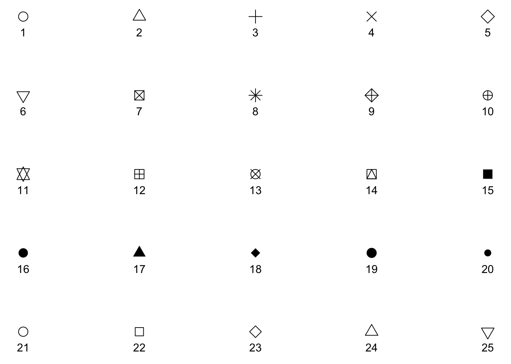
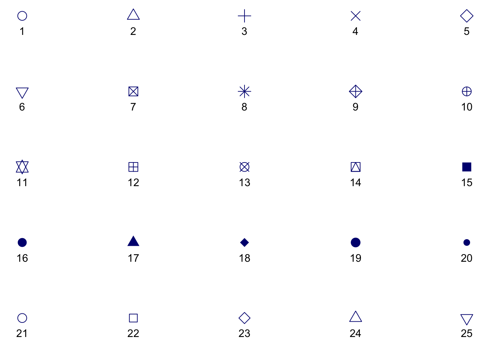
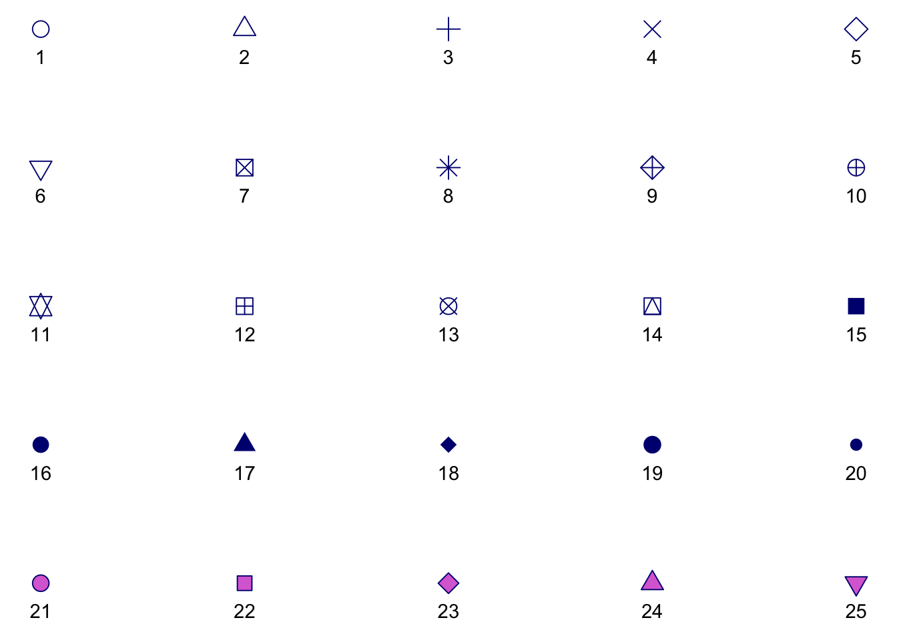
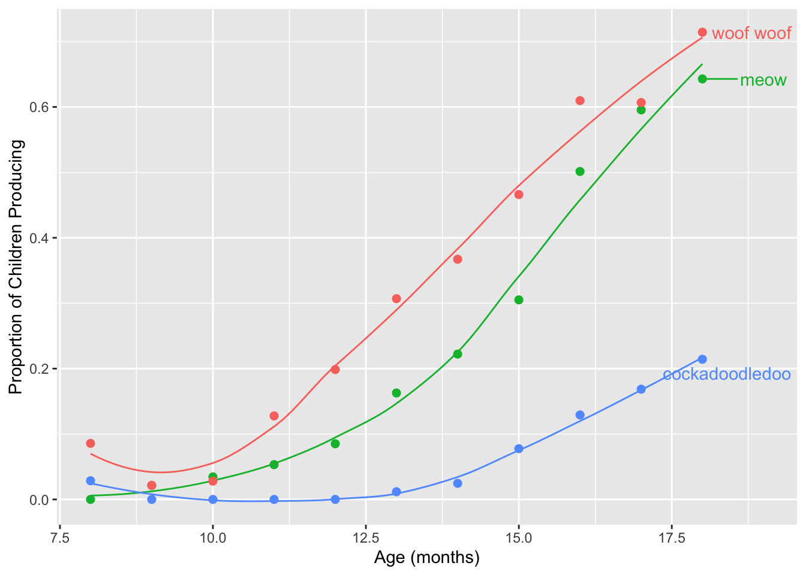

Lab 03: Colors with Animal Sounds
BMI 5/625
Alison Hill w/ tweaks by Steven Bedrick
1 Overview
There are 10 challenges total- none are in the “continuous colors” section, but you can use that section to complete the tenth challenge on your own. Upload your knitted html document by next Wednesday to Sakai!
Note that this lab depends on many packages; on the Posit Cloud project for the lab deliverable, I have pre-installed them all (I think). We’ve left the installation instructions here in the lab document for demonstration purposes.
2 Slides for today
knitr::include_url("slides/03-slides.html")3 Packages
Other packages will be needed to be installed as you go- reveal the first code chunks when in doubt!
library(tidyverse)4 Read in the data
sounds <- read_csv(here::here("data", "animal_sounds_summary.csv"))5 Colour vs fill aesthetic
Fill and colour scales in ggplot2 can use the same palettes. Some
shapes such as lines only accept the colour aesthetic,
while others, such as polygons, accept both colour and
fill aesthetics. In the latter case, the
colour refers to the border of the shape, and the
fill to the interior.

All symbols have a foreground colour, so if we add
color = "navy", they all are affected.
s + geom_point(aes(shape = z), size = 4, colour = "navy") 
While all symbols have a foreground colour, symbols 21-25 also take a
background colour (fill). So if we add fill = "orchid",
only the last row of symbols are affected.
s + geom_point(aes(shape = z), size = 4, colour = "navy", fill = "orchid") 
This is why it is so common to have issues with color
and fill and geom_point(), by the way!
6 Data
For the rest of today, we’ll play with the sounds
dataset. This data was derived from the R package wordbankr,
an R interface to access Wordbank- an open source
database of children’s vocabulary development. The tool used to measure
children’s language and communicative development in this database is
the MacArthur-Bates Communicative
Development Inventories (MB-CDI). The MD-CDI is a parent-reported
questionnaire.
Here is a glimpse of the data:
glimpse(sounds)Rows: 33
Columns: 7
$ age <dbl> 8, 8, 8, 9, 9, 9, 10, 10, 10, 11, 11, 11, 12, 12, 12, …
$ sound <chr> "cockadoodledoo", "meow", "woof woof", "cockadoodledoo…
$ kids_produce <dbl> 1, 0, 3, 0, 2, 2, 0, 5, 4, 0, 5, 12, 0, 12, 28, 9, 125…
$ kids_understand <dbl> 3, 10, 12, 2, 21, 22, 9, 41, 40, 4, 36, 32, 16, 59, 59…
$ kids_respond <dbl> 35, 35, 35, 91, 93, 93, 139, 145, 143, 94, 94, 94, 141…
$ prop_produce <dbl> 0.02857143, 0.00000000, 0.08571429, 0.00000000, 0.0215…
$ prop_understand <dbl> 0.08571429, 0.28571429, 0.34285714, 0.02197802, 0.2258…Note that the unit of observation here is one-row-per-age-group/animal sound.
Variables you need for this lab:
age: child age in monthssound: a string describing a type of animal soundkids_produce: the number of parents who answered “yes, my child produces this animal sound” (note that if the child produces a sound it is assumed that they understand it as well)kids_respond: the number of parents who responded to this question at allprop_produce: the proportion of kids whose parents endorsed that their child produces this animal sound, out of all questionnaires administered (i.e.,kids_produce / kids_respond)
Other variables in this dataset:
kids_understand: the number of parents who answered “yes, my child understands what this animal sound means” (note that a child can understand the sound but not produce it)prop_understand: the proportion of kids whose parents endorsed that their child understands this animal sound, out of all questionnaires administered (i.e.,kids_understand / kids_respond)
7 Discrete vs continuous variables
For a refresher (and more detailed deep-dive), check out: “WHAT IS THE DIFFERENCE BETWEEN CATEGORICAL, ORDINAL AND NUMERICAL VARIABLES?”
In order to use color with your data, most importantly, you need to know if you’re dealing with discrete or continuous variables.
7.1 Discrete color palettes
Discrete color palettes work best when you want to color by a qualitative variable. Qualitative variables tend to be either categorical or ordinal. Different variables can be qualitative or quantitative depending on context.
In this dataset, sound is a categorical variable with 3
possible values:
sounds %>%
distinct(sound) %>%
knitr::kable()| sound |
|---|
| cockadoodledoo |
| meow |
| woof woof |
We could map arbitrary numbers onto each of these sounds, like 1, 2, and 3- but the numbers still would not mean anything. That is, there is no intrinsic ordering to these categories. Examples of common pure categorical variables are race or ethnicity, gender, hair color, eye color, etc. Coloring by sound is used as a way to distinguish the data for different sounds from each other (read more here: http://serialmentor.com/dataviz/color-basics.html#color-as-a-tool-to-distinguish)
7.2 Continuous color palettes
Continuous color palettes work best when you want to color by a
quantitative variable. Quantitative variables tend to be either ordinal
or continuous. In this dataset, age (in months) can only
take on a limited set of values:
sounds %>%
distinct(age) %>%
pull [1] 8 9 10 11 12 13 14 15 16 17 18However, in the following plots, we’ll treat age as a continuous variable plotted across the x-axis. In some contexts, this kind of variable could be treated as a ordinal variable. However, for color purposes, this would not ideal here since there are 11 “categories” (see http://serialmentor.com/dataviz/color-pitfalls.html). Age has a natural and meaningful order: a child who is 9 months old is 1 month older than one who is 8 months old. So, we’ll use that natural ordering to our advantage and not use color to represent age as a variable. When you do apply a continuous color palette, you’ll want to use color to your advantage to represent data values.
8 Know your data
How many variables?
- Which variables are continuous?
- Which ones are categorical or ordinal?
How many total kids do we have data for?
How many ages (in months)?
- How many kids per age?
How many types of animal sounds? What are they?
Let’s start just by getting a feel for how many kids produce each kind of sound, across the full age range. We could make a table:
sounds %>%
group_by(sound) %>%
summarize(total_produce = sum(kids_produce)) %>%
knitr::kable()| sound | total_produce |
|---|---|
| cockadoodledoo | 148 |
| meow | 681 |
| woof woof | 940 |
Or we could make a simple bar plot:
ggplot(sounds, aes(x = sound, y = kids_produce)) +
geom_col() +
labs(x = "Sound", y = "Total Children Producing")
For this kind of plot, we don’t really need color. What if we want to
see how the number of kids who produce each sound varies by age? We’ll
change the x-axis to age and instead facet_wrap by
sound, and make the y-axis a proportion instead of
counts.
ggplot(sounds, aes(x = age, y = prop_produce)) +
geom_col() +
labs(x = "Age (mos)", y = "Proportion of Children Producing") +
facet_wrap(~sound)
The bar geom makes this a little hard to read and compare across facets though. Let’s try points instead.
ggplot(sounds, aes(x = age, y = prop_produce)) +
geom_point() +
labs(x = "Age (mos)", y = "Proportion of Children Producing") +
facet_wrap(~sound)
That is a little better! Facets allow us to parse the relationship between two quantitative variables (here, age and proportion of kids producing) by a qualitative variable (here, type of sound). Another way we could do this, instead of faceting, is to use color. This would make it easier to compare proportions at each age.
9 Discrete colors
Let’s start with a base plot with age (in months) along the x-axis and the proportion of children producing each word along the y-axis, using points as the geometric object. Set the size of the points to 2 and change the x- and y-axis labels to “Age (months)” and “Proportion of Children Producing”, respectively.
ggplot(sounds, aes(x = age, y = prop_produce)) +
geom_point(size = 2) +
labs(x = "Age (months)", y = "Proportion of Children Producing")
9.1 Default discrete palette
Take the plot we just made, and edit the code to map the color of the
points to the type of sound produced at the geom level. The
colors that show up are the default discrete palette in
ggplot2.
ggplot(sounds, aes(x = age, y = prop_produce)) +
geom_point(aes(color = sound), size = 2) +
labs(x = "Age (months)", y = "Proportion of Children Producing")
Try adding geom_line() to this plot to connect the dots.
Does this look right? Use ?geom_line to figure out how this
geom connects the dots by default, and which aesthetic can be used to
connect cases together. Try editing your code to draw 3 black lines- one
for each sound.
# Does this look right? no!
ggplot(sounds, aes(x = age, y = prop_produce)) +
geom_line() +
geom_point(aes(color = sound), size = 2) +
labs(x = "Age (months)", y = "Proportion of Children Producing") 
# A possible solution
ggplot(sounds, aes(x = age, y = prop_produce)) +
geom_line(aes(group = sound)) +
geom_point(aes(color = sound), size = 2) +
labs(x = "Age (months)", y = "Proportion of Children Producing") 
Make two plots:
Recreate the plot above, but this time map color to the type of sound produced for both the point and line geoms. Pay attention to the order of the layers you are adding- you may wish to place
geom_linebeforegeom_pointso the lines are always “painted” underneath the points.Instead of
geom_line, add a loess line usinggeom_smooth. Use?geom_smoothto figure out how to get rid of the grey standard error ribbon. You may also want to increase the line width.
# Does this look right? yes!
ggplot(sounds, aes(x = age, y = prop_produce, color = sound)) +
geom_line() +
geom_point(size = 2) +
labs(x = "Age (months)", y = "Proportion of Children Producing") 
ggplot(sounds, aes(x = age,
y = prop_produce,
color = sound)) +
geom_smooth(se = FALSE, lwd = .5) +
geom_point(size = 2) +
labs(x = "Age (months)", y = "Proportion of Children Producing") 
Why does this work? To tell geom_line how to connect
your dots, you can either:
- Map the
groupaesthetic (soaes(group = sound)), or - Map the
coloraesthetic globally (aes(color = sound).
Because geom_line understands the color
aesthetic, it will try to draw separate lines for each color. Here that
translates to three lines, one for each sound, which is what we
want!
9.2 Brief aside: factors
At this point, our plot is looking pretty good. But you may have noticed that the legend order doesn’t match the order of the lines in the plot. Question: why is this an issue?
What determines the order of levels in the legend? The order of levels in the underlying factor:
levels(as.factor(sounds$sound))[1] "cockadoodledoo" "meow" "woof woof" In this case, since we haven’t set them, R will pick an order for us.
We could manually re-order the levels of the factor, but different plots might necessitate different factor ordering, and if we have more than two or three levels, typing them repeatedly gets tedious fast. Instead, let’s have R do it!
The forcats
package, is for categorical variables and
has lots of useful functions, including some for re-ordering levels.
There are lots of functions in forcats, and you can install
& load it separately, although forcats is loaded with
the tidyverse.
install.packages("forcats")
library(forcats)We’ll use the fct_reorder2 function, which by default
will re-order the levels of a factor based on the order of occurrence of
one variable (y in the docs) when the dataframe is
sorted by another variable (x in the docs):
# "Sort the dataframe by age, find the last occurrence of each level of sounds$sound in order of prop_produce
fct_reorder2(
as.factor(sounds$sound),
sounds$age, # variable "x"
sounds$prop_produce # varible "y"
) %>% levels[1] "woof woof" "meow" "cockadoodledoo"Note that the levels are now sorted. This (somewhat convoluted) procedure is very useful for when you have a line chart of two quantitative variables, colored by a factor variable, and is designed to be use as part of your ggplot workflow. Let
’s see the difference this seemingly-small detail can make for a plot:
sounds <- sounds %>%
mutate(sound = as.factor(sound))
sound_traj <- ggplot(sounds, aes(x = age,
y = prop_produce,
color = fct_reorder2(sound, age, prop_produce))) +
geom_smooth(se = FALSE, lwd = .5) +
geom_point(size = 2) +
labs(x = "Age (months)",
y = "Proportion of Children Producing",
color = "sound")
sound_traj
MUCH BETTER! Save your plot object as sound_traj. Now we
can start playing with the actual colors.
9.3 Set luminance and saturation (chromaticity)
The default qualitative palette works fine here. The addition of scale_color_hue
changes nothing.
sound_traj +
scale_color_hue()
We can also change these settings within the default color palette, where the arguments are:
h= range of hues to use, in [0, 360]l= luminance (lightness)c= chroma (intensity of color)
Changing hue, and leaving luminance and chroma at their default settings:
# Change hue (l and c are defaults)
sound_traj +
scale_color_hue(h = c(0, 90), l = 65, c = 100)
Turning down the luminance:
# Use luminance=45, instead of default 65
sound_traj +
scale_color_hue(l = 45)
Turning down the saturation, and increasing the luminance:
# Reduce saturation (chroma) from 100 to 50, and increase luminance
sound_traj +
scale_color_hue(l = 75, c = 50)
Play around with these parameters a bit, to get a feel for how they work!
9.4 Set discrete colors
We can change the actual colors used by adding the layer
scale_color_manual or scale_fill_manual.
Confusion between which to use when is often the cause of much
frustration!
To name more than one color, which you often want to do, use
c(). In the parentheses, named colors and hex colors are
always in quotes.
sound_traj +
scale_color_manual(values = c("cornflowerblue",
"seagreen", "coral"))
There are many named colors available in R!
View the code blocks below. Copy and paste the code to run them in your own file. Why do neither of the following code blocks change the colors of the points and lines? Use your words :) (the answer is below the challenge, but try to trouble-shoot on your own first)
ggplot(sounds, aes(x = age,
y = prop_produce,
color = fct_reorder2(sound, age, prop_produce))) +
geom_smooth(se = FALSE, lwd = .5) +
geom_point(size = 2) +
labs(x = "Age (months)",
y = "Proportion of Children Producing",
color = "sound") +
scale_fill_manual(values = c("cornflowerblue",
"seagreen", "coral"))
ggplot(sounds, aes(x = age,
y = prop_produce,
fill = fct_reorder2(sound, age, prop_produce))) +
geom_smooth(se = FALSE, lwd = .5) +
geom_point(size = 2) +
labs(x = "Age (months)",
y = "Proportion of Children Producing",
fill = "sound") +
scale_fill_manual(values = c("cornflowerblue",
"seagreen", "coral"))
Answers:
- In the first, we used
scale_fill_manual, but the in the global aesthetics, we mapped thecolor, notfill, aesthetic onto thesoundvariable. - In the second, we did define the
fillaesthetic and usedscale_fill_manual, so that is good. Butgeom_lineonly understands thecoloraesthetic, notfill. And forgeom_point, the default shape for is 19, which does not understand thefillaesthetic.
Start with this plot:
sound_traj
Add a black outline to the points, and color the inside of the points
and the lines by sound using the default discrete color
palette. You may also wish to edit the legends on this plot:
geom_smooth has an argument called
show.legend = FALSE. See if you prefer the plot with this
change.
If this was easy, try applying the same custom color palette to the inside of the points and to the lines.
ggplot(sounds, aes(x = age,
y = prop_produce,
fill = fct_reorder2(sound, age, prop_produce))) +
geom_smooth(aes(color = fct_reorder2(sound, age, prop_produce)),
se = FALSE, lwd = .5, show.legend = FALSE) +
geom_point(size = 2, shape = 21) +
labs(x = "Age (months)",
y = "Proportion of Children Producing",
fill = "sound")
ggplot(sounds, aes(x = age,
y = prop_produce,
fill = fct_reorder2(sound, age, prop_produce))) +
geom_smooth(aes(color = fct_reorder2(sound, age, prop_produce)),
se = FALSE, lwd = .5, show.legend = FALSE) +
geom_point(size = 2, shape = 21) +
labs(x = "Age (months)",
y = "Proportion of Children Producing",
fill = "sound") +
scale_fill_manual(values = c("cornflowerblue",
"seagreen", "coral")) +
scale_color_manual(values = c("cornflowerblue",
"seagreen", "coral"))
You can also define your color palette as a vector outside of
ggplot2. Below, I made an object called
my_colors outside of ggplot2. To use it, we
call that object within the scale_colour_manual
function.
my_colors <- c("cadetblue", "steelblue", "salmon") # quote color names
sound_traj +
scale_color_manual(values = my_colors) # note: not in quotes
Define a custom color palette using hexadecimal colors (#rrggbb), and
apply it using scale_color_manual to your
sound_traj plot. Some basic ones are here:
https://sashat.me/2017/01/11/list-of-20-simple-distinct-colors/
Parse the hexadecimal string like so: #rrggbb, where rr, gg, and bb refer to color intensity in the red, green, and blue channels, respectively.
# from https://github.com/mwaskom/seaborn/blob/master/seaborn/palettes.py
sb_colorblind <- c("#0072B2", "#009E73", "#D55E00",
"#CC79A7", "#F0E442", "#56B4E9")
sound_traj +
scale_colour_manual(values = sb_colorblind)
9.5 Built-in discrete palettes
9.5.1 Colorbrewer
As we discussed on Monday, Colorbrewer is a useful tool for designing color palettes, which can be used directly in R.
To use Colorbrewer palettes, you’ll need to install the
RColorBrewer package from CRAN. This chunk of code tells
you how:
install.packages("RColorBrewer")
library(RColorBrewer)Colorbrewer has a few named (i.e., pre-set) qualitative palettes: Accent, Dark2, Paired, Pastel1, Pastel2, Set1, Set2, Set3. Here is how to view them:
brewer.pal(5, "Dark2") # list 5 hex colors[1] "#1B9E77" "#D95F02" "#7570B3" "#E7298A" "#66A61E"display.brewer.pal(5, "Dark2") # view 5 hex colors
And here is how you use them:
sound_traj +
scale_color_brewer(palette = "Dark2")
9.5.2 Viridis palettes
ggplot comes built-in with the “Viridis” color palette,
the point of which is to be a set of colors that “are pretty, better
represent your data, easier to read by those with colorblindness, and
print well in grey scale.”
Read more here in the viridis
vignette. Note that this vignette is for an R package that is
generally no longer needed with recent versions of ggplot- the Viridis
color palette didn’t used to be part of ggplot by default,
but it does now! 🎉 There are Viridis four colormap options
available:
- “magma” (or “A”),
- “inferno” (or “B”),
- “plasma” (or “C”),
- “viridis” (or “D”, the default option).
sound_traj +
scale_color_viridis_d() +
theme_minimal()
sound_traj +
scale_color_viridis_d(option = "plasma") +
theme_minimal()
Use the Viridis palettes to color the points by and the lines by
sound; make the outline of the points “midnightblue”. Pick
any colormap option, and play with theme_bw or
theme_minimal to see what you like.
ggplot(sounds, aes(x = age,
y = prop_produce,
fill = fct_reorder2(sound, age, prop_produce))) +
geom_smooth(aes(color = fct_reorder2(sound, age, prop_produce)),
se = FALSE, lwd = .5, show.legend = FALSE) +
geom_point(size = 2, shape = 21, colour = "midnightblue") +
labs(x = "Age (months)",
y = "Proportion of Children Producing",
fill = "sound") +
scale_fill_viridis_d() +
scale_color_viridis_d() +
theme_minimal()
A note: the default Viridis discrete palette ends up in a pretty gnarly yellow color that I personally feel like is not ideal for all situations. In practice, I have been known to artificially clamp the range of the Viridis discrete palette to avoid that last color.
9.6 Color Palettes from Packages
As with everything else in R, there are numerous homebrew packages with different color palettes. Here, we will meet a few of my favs.
9.6.1 Wes Anderson palettes
My favorite! To use Wes Anderson palettes, you’ll need to install the
wesanderson package from CRAN. This chunk of code tells you
how:
install.packages("wesanderson")
library(wesanderson)names(wes_palettes) # all the palette names [1] "BottleRocket1" "BottleRocket2" "Rushmore1"
[4] "Rushmore" "Royal1" "Royal2"
[7] "Zissou1" "Zissou1Continuous" "Darjeeling1"
[10] "Darjeeling2" "Chevalier1" "FantasticFox1"
[13] "Moonrise1" "Moonrise2" "Moonrise3"
[16] "Cavalcanti1" "GrandBudapest1" "GrandBudapest2"
[19] "IsleofDogs1" "IsleofDogs2" "FrenchDispatch"
[22] "AsteroidCity1" "AsteroidCity2" "AsteroidCity3" wes_palette("GrandBudapest2") # view named palette
wes_palette("GrandBudapest2")[1:4] # list first 4 hex colors[1] "#E6A0C4" "#C6CDF7" "#D8A499" "#7294D4"wes_palette("GrandBudapest2")[c(1,4)] # list colors 1 and 4[1] "#E6A0C4" "#7294D4"To use these palettes, use scale_color_manual where
values is set to wes_palette("name"). For
example, to get colors inspired by the visual aesthetic of The
Darjeeling Limited:
sound_traj +
scale_color_manual(values = wes_palette("Darjeeling1")) + ggtitle("Colors: The Darjeeling Limited ")
Or The Fantastic Mr. Fox:
sound_traj +
scale_color_manual(values = wes_palette("FantasticFox1")) + ggtitle("Colors: Fantastic Mr. Fox")
What if you just don’t want to use the colors in the order they are
in? Use a wes_palette of your choice. Using our code from
above, try picking the last 3 colors of a palette. Add it to your
sound_traj plot.
If this was easy, try using colors 2, 3, and 5 instead.
sound_traj +
scale_color_manual(values = wes_palette("Darjeeling1")[3:5])
sound_traj +
scale_color_manual(values = wes_palette("FantasticFox1")[c(2, 3, 5)])
9.6.1.1 Sidebar:
wes_palette In The Wild
I recently used one of the Wes Anderson palettes (“AsteroidCity1”) in one of my own figures!

9.6.2 Also great: Studio Ghibli!
Another fun choice: The Studio Ghibli color palettes!
sound_traj +
scale_colour_ghibli_d("YesterdayMedium", direction = -1)
Why do we need that direction = -1 business? To answer,
let’s try running this with the default color ordering:
sound_traj +
scale_colour_ghibli_d("YesterdayMedium", direction = 1)
Those all look indistinguishable; why is this happening? Let’s look at the colors in the palette:
ghibli_palette("YesterdayMedium")
We see that the first few colors are very dark; on a grey background, with small lines, those colors look very similar to one another. So similar that, at first, it looks like they are all the same! To prove that we are actually pulling in those colors, let’s artificially (and temporarily!) increase our point size:
sound_traj +
geom_point(size = 20) +
scale_colour_ghibli_d("YesterdayMedium", direction = 1)
We can see that indeed, the colors from the palette are being used,
but that they are too similar to be a good choice for this plot. Hence,
swapping the normal order of the colors using the direction
argument.
9.6.3
ggthemes palettes
To use these palettes, you’ll need to install the
ggthemes package from CRAN. This chunk of code tells you
how:
install.packages("ggthemes")
library(ggthemes)Once you have loaded this library, there will be several new
scale_ options for you to choose from:
sound_traj +
scale_color_fivethirtyeight()
sound_traj +
scale_color_economist()
9.6.4 ggsci
Palettes
ggsci provides
color palettes designed to match with the aesthetics of a wide variety
of scientific publishers:
library(ggsci)
sound_traj + scale_color_nejm()
9.6.5 Palettes from the Queen Bee
To use Beyonce
palettes, you’ll need to install the beyonce package
from GitHub using devtools::install_github(). This chunk of
code tells you how:
install.packages("devtools")
devtools::install_github("dill/beyonce")Once you have installed the package, you can load it as normal:
library(beyonce)(Note that last year, a few students had mysterious installation problems with this package! Move on if you do.)
beyonce_palette(18)
Since we have three levels, we can choose whichever three colors from this palette we want:
sound_traj +
scale_color_manual(values = beyonce_palette(18)[3:5])
Here we’ll only use the first, fourth, and fifth colors in the palette.
sound_traj +
scale_color_manual(values = beyonce_palette(18)[c(1, 4, 5)])
9.7 Going Greyscale for Discrete
Use scale_color_grey or scale_fill_grey, or
sometimes both depending on your geoms and the aesthetics they
understand.
sound_traj +
scale_color_grey() +
theme_minimal()
scale_color_grey lets us set start and end points for
the range of greys to allow, which can be important depending on the
background we’re using:
sound_traj +
scale_color_grey(start = 0.2, end = .8) 
Make the same plot but make points outlined in black
ggplot(sounds, aes(x = age,
y = prop_produce,
fill = fct_reorder2(sound, age, prop_produce))) +
geom_smooth(aes(color = fct_reorder2(sound, age, prop_produce)),
se = FALSE, lwd = .5, show.legend = FALSE) +
geom_point(size = 2, shape = 21) +
labs(x = "Age (months)",
y = "Proportion of Children Producing",
fill = "sound") +
scale_fill_grey(start = 0.3, end = 1) +
scale_color_grey(start = 0.3, end = 1) 
I always suggest using redundancy in greyscale- try changing line type instead of (or in addition to) line color.
Change line type by sound, set color to black.
ggplot(sounds, aes(x = age,
y = prop_produce,
fill = fct_reorder2(sound, age, prop_produce))) +
geom_smooth(aes(lty = fct_reorder2(sound, age, prop_produce)), color = "black",
se = FALSE, lwd = .5, show.legend = FALSE) +
geom_point(size = 2, shape = 21) +
labs(x = "Age (months)",
y = "Proportion of Children Producing",
fill = "sound") +
scale_fill_grey(start = 0.3, end = 1) 
Change both!
ggplot(sounds, aes(x = age,
y = prop_produce,
fill = fct_reorder2(sound, age, prop_produce))) +
geom_smooth(aes(color = fct_reorder2(sound, age, prop_produce),
lty = fct_reorder2(sound, age, prop_produce)),
se = FALSE, lwd = .5, show.legend = FALSE) +
geom_point(size = 2, shape = 21) +
labs(x = "Age (months)",
y = "Proportion of Children Producing",
fill = "sound") +
scale_fill_grey(start = 0.3, end = .8) +
scale_color_grey(start = 0.3, end = .8) 
9.8 Colorblind-friendly palettes
The colorblindr
package can be used to “simulate colorblindness in production-ready
R figures.” To use this package, you’ll need to first install the
cowplot package from GitHub using
devtools::install_github(). You’ll also need to install the
colorspace package from CRAN. Finally, you can then use
devtools::install_github() again to install the
colorblindr package. This code chunk shows you how to do
all 3 installs to use the colorblindr package:
devtools::install_github("wilkelab/cowplot")
install.packages("colorspace", repos = "http://R-Forge.R-project.org")
devtools::install_github("clauswilke/colorblindr")To use:
# save a ggplot object
my_sound_traj <- sound_traj +
scale_color_manual(values = beyonce_palette(18)[c(1, 4, 5)])View that figure after color-vision-deficiency simulation:
library(colorblindr)Error in library(colorblindr): there is no package called 'colorblindr'cvd_grid(my_sound_traj)Error in cvd_grid(my_sound_traj): could not find function "cvd_grid"You can also use the colorblind-friendly palette in this package
using scale_color_OkabeIto and
scale_fill_OkabeIto:
cb_sound_traj <- sound_traj +
scale_color_OkabeIto()Error in scale_color_OkabeIto(): could not find function "scale_color_OkabeIto"cb_sound_trajError: object 'cb_sound_traj' not foundcvd_grid(cb_sound_traj)Error in cvd_grid(cb_sound_traj): could not find function "cvd_grid"You can still use this colorblind-friendly palette without the
colorblindr package though. Here are the colors!

The Cookbook for R provided the matching hex colors too to make life easier:
cbbPalette <- c("#000000", "#E69F00", "#56B4E9", "#009E73", "#F0E442", "#0072B2", "#D55E00", "#CC79A7")
# To use for line and point colors, add
sound_traj +
scale_colour_manual(values = cbbPalette[c(3, 7, 8)])
9.9 Labels
When working with colors, the default pattern, enforced by
ggplot, is to use a figure legend to indicate which color
goes with which level of a factor. However, this is not always the best
way to go! Another option is to directly label your data within the plot
itself. When should you consider this option?
- When you have a very small number of levels
- When the design of the rest of the plot is amenable: there aren’t too many other annotations or visual elements taking up space.
There are several ways to do this, but a good place to start is
ggrepel, which provides a geom_text_repel for
placing labels:
library(ggrepel)
sounds <- sounds %>%
mutate(label = case_when(
age == max(age) ~ sound))
ggplot(sounds, aes(x = age,
y = prop_produce,
color = fct_reorder2(sound, age, prop_produce))) +
geom_smooth(se = FALSE, lwd = .5) +
geom_point(size = 2) +
labs(x = "Age (months)",
y = "Proportion of Children Producing") +
geom_text_repel(aes(label = label),
nudge_x = 1,
direction = "y",
na.rm = TRUE) +
guides(color = FALSE)
10 Continuous colors
N.B. All of the example plots below are great examples of how not to use continuous colors. I’m showing these so you can see how to work with continuous color palettes, and to make this topic flow easier for you I’m sticking with original dataset.
10.1 Default continuous palette
Let’s map color to a continuous variable. For this, we are returning
to geom_line instead of geom_smooth, because
the latter doesn’t respond to continuous color palettes.
sound_by_age <- ggplot(sounds, aes(x = age,
y = prop_produce,
color = age)) +
geom_line(aes(group = sound), lwd = .5) +
geom_point(size = 2) +
labs(x = "Age (months)",
y = "Proportion of Children Producing")
sound_by_age
10.2 Color choice with continuous variables
With discrete colors, we used either scale_color_manual
or scale_fill_manual (and sometimes both were needed!). For
continuous colors, we use either scale_color_gradient or
scale_fill_gradient.
sound_by_age +
scale_color_gradient()
You can reverse the gradient scale…
sound_by_age +
scale_color_gradient(trans = "reverse")
And can also specify the color endpoints for the gradient, either by name or by hex code:
sound_by_age +
scale_color_gradient(low = "white", high = "red")
We can make this same plot using a custom greyscale gradient (instead
of using scale_color_grey itself).
sound_by_age +
scale_color_gradient(low = "grey90", high = "black")
So scale_color_gradient gives you a sequential gradient,
but you may want a diverging color scheme instead. For that, you can use
scale_color_gradient2
# Diverging color scheme
med_age <- sounds %>%
summarize(mos = median(age)) %>%
pull()
sound_by_age +
scale_color_gradient2(midpoint = med_age,
low="blue", mid="white", high="red" )
10.3 Built-in continuous palettes
10.3.1 Use
RColorBrewer
Again, to use you need to install and load the
RColorBrewer palette.
library(RColorBrewer)Then use scale_color_gradient.
sound_by_age +
scale_color_gradientn(colours = brewer.pal(n=5, name="PuBuGn"))
Reverse the colors…
sound_by_age +
scale_color_gradientn(colours = rev(brewer.pal(n=5, name="PuBuGn")))
10.3.2 Viridis
Note! When using the Viridis package and its
discrete == FALSE mode (the default) all other arguments
are just the same as with scale_fill_gradient or
scale_color_gradient. (Also note that
_gradient_n_ is not a typo- the n versions of
those functions allow multi-color gradients).
sound_by_age +
scale_color_viridis_c()
sound_by_age +
scale_color_viridis_c(option = "magma")
Read the help function for ?scale_color_viridis_c. As
before, we can use the direction parameter to reverse the
order of the colors, or, atlernatively, we can use the
begin and end parameters to accomplish the
same thing. Using the “inferno” palette in reverse:
sound_by_age +
scale_color_viridis_c(option = "inferno", begin = 1, end = 0)
This begin/end trick is also how we can
adjust the color scale to not get quite so… yellow at the very
end>
sound_by_age +
scale_color_viridis_c(option = "inferno", begin = 0, end = 0.9) # if we don't want it to go all the way to 1.0...
11 Final challenge (#9)
Using new data of your choice, make three new plots.
Use any geom that makes sense. The plots should:
- Have x- and y-axes that are each quantitative variables.
- Apply a non-default color palette, either coloring by a qualitative variable (discrete colors) or a quantitative variable (continuous colors). This list of R color palettes has even more ideas than we could cover in class.
In the first plot, you must wield color carefully and effectively. The addition of the color/fill aesthetics must be done in a way that the interpretation of the plot improves. Also, you must show how your colors fare for colorblind viewers. Include 2-3 sentences about why you made the plot that you did. What questions does your plot answers (or perhaps what questions does your plot raise)?
In the second plot, you must make a greyscale version of your first plot! And again, it must look good and make sense.
In the third plot, you must use color badly. Make a plot where the colors are either redundant, confusing, or just generally non-sensical. Explain why this last visualization fails.
Some data ideas:
- MacArthur-Bates Communicative Development Inventory (MB-CDI), a
family of parent-report questionnaires measuring children’s vocabulary
understanding and production
- R
package
wordbankr - See my code here
- R
package
- POTUS Executive Orders
- National Electronic Injury Surveillance System (NEISS)
- R package
neiss - Follow Julia Silge’s code-through here
- R package
- Flights
- Building Permits
- Cocktail Balance
- NASA Weather
- Social Security Administration Baby Names
- R
package
babynames - Follow Julia Silge ‘My Baby Boomer Name Might Have Been “Debbie”’: https://juliasilge.com/blog/my-baby-boomer-name/
- Follow Hilary Parker: Hilary: The Most Poisoned Baby Name in US History: https://hilaryparker.com/2013/01/30/hilary-the-most-poisoned-baby-name-in-us-history/
- R
package
- Youth Behavior Risk Surveillance System
- Gun sales
- Data
- Some example plots here
- Gapminder